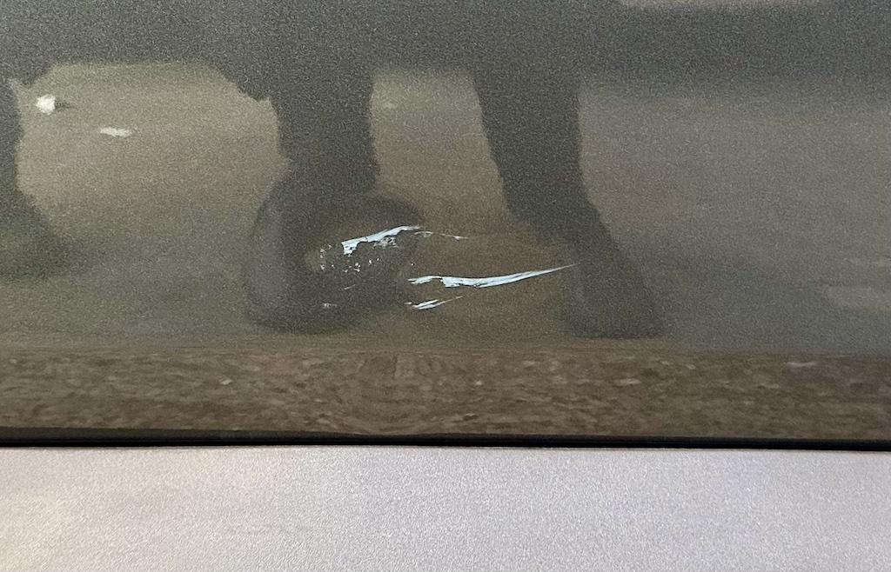
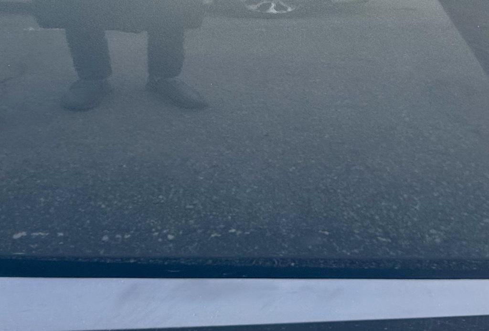

투싼에 생애 첫 상처를 입혔다
어떤 겨울 날, 좁은 골목길 삼거리 근처에서 주차했던 차를 빼고 있었다. 당시 빠져나가야 될 길의 조수석 방향에 전신주가 있었다. 운전석에선 딱히 다른 장애물은 보이지 않았기에 전신주를 잘 피해서 차를 살살 빼기 시작했다.
그런데 잘 가나 싶었는데 누가 차 문을 조금 강하게 똑똑 노크하는 소리가 들렸다. 밖에는 아무도 없는데 도대체 누구일까? 혹시 키 작은 아이가 있었던 걸까? 급한 마음에 차에서 내려 조수석 방향으로 가봤다.
투싼에 생애 첫 상처를 입혔다
나가보니 사람은 안 보였다. 다행이다...라고 생각하는 순간, 차 옆에 무릎 정도 높이의 파란색 재설용 모래 상자가 보였다. 작아서 사이드미러에도 안 보일 정도였지만 무겁고 묵직했던 장애물이었다. 불안한 마음이 강하게 들었다. 설마...?
차량 조수석 도어를 불안한 마음으로 처다봤다. 예상대로 도어 아랫쪽에 파랗게 잔뜩 긁힌 자국이 보였다.
"... 아 ... 아아 ... 아아아아!!!"
처참했다. 순간 눈 앞에 하얘지더니 이내 속이 쓰리기 시작했다. 당시 찍은 사진이 없다는 것만 봐도 얼마나 정신이 없었는지 알 수 있다.
이후 어떻게든 무사히 좁은 길은 빠져나갔지만 귀가할 때까지 머리 속에 이 씁쓸함으로 가득 찼었다. 그나마 안전하게 도착한 것이 어디일까 싶을 정도였다.
주차를 한 뒤 세척용 물티슈로 닦아보니 다행히도 어느 정도는 닦였다. 이대로 다 닦이나 싶었지만 일부는 닦이지 않았다.
 완전히 닦이지 않은 자국과 찌그러진 흔적
하지만 더 큰 문제가 있었으니 바로 긁힌 부분이 찌그러졌다는 점이다. 무거운 모래상자를 차 옆면으로 밀다시피 지나갔으니 찌그러질 수밖에 없었을 거다. 더더욱 속이 쓰리기 시작했다. 밤에는 이런저런 생각으로 잠까지 설칠 정도였다.
이대로 놔둘 순 없었다
이 상처를 어떻게 해야 하나 고민하다 시간이 좀 흘러갔다. 그런데 주변 사람들이 도장면이 훼손된 걸 방치하면 녹이 슬어서 더 크게 망가질 수도 있다는 것을 들었다.
그래서 바로 주변 판금이나 도장하는 곳을 찾아봤다. 이런 곳을 덴트(dent)라고 하나 보다.
원칙적으로 덴트(dent, PDR - Paintless Dent Repair)는 찌그러진 것을 복원(덴트복원 혹은 덴트리페어)하는 것을 의미한다고 한다. 도색까지 포함할 경우 판금도색이라고 하는 것이 정확하다고 한다.
네이버 지도에서는 가까운 곳 근처에서 단 하나만 발견했는데 자동차 수리나 점검 관련 매장이 잔뜩 모여 있는 곳임에도 하나 밖에 안 보이는 것은 약간 이상하긴 했다.
어쨌든 그 가까운 덴트 매장에 연락도 예약도 없이 들이닥쳤다. 생각보단 작은 가게였는데 작업 중이던 차 한 대가 들어가니 가득 찰 정도로 작았다.
기사분께 문제의 상처를 보여주니 다행히도 도장이 벗겨진 것은 아니고 페인트가 묻은 것 같다는 판단을 들을 수 있었고 견적은 10만 원 정도가 나왔다. 다만 대기가 좀 있어서 오래 걸릴 수 있다고 한다. 물론 그대로 해달라고 했다. 굳이 돌아다니며 견적을 비교하는 건 그 시간이 더 아깝다고 생각하는 사람이라 그렇다.
근처에서 식사를 하고 카페에서 잠깐 시간을 보냈다. 블루링크에서 주차 중 충격이니 시동이 꺼졌는데 차 문이 열렸니 창문이 열렸니 알림이 계속 왔다. 열심히 수리 중이라는 걸 알려주는 것 같았다.
어쨌거나 수리를 맡겼다는 것에서 약간의 안도가 드는 것은 좋은 사이드이펙트 같았다.
그 결과
커피를 절반 가량 거의 다 마셔갈 무렵, 예상보다 빠르게 조치가 되었다고 연락이 왔다. 여유롭게 커피를 즐길 생각이었는데 너무 빨라서 약간 허탈했다.
어쨌든 다시 매장을 방문하여 어떻게 되었나 살펴봤다.
 솔직히 어디가 찌그러졌었는지 모르겠다
멀리서 확인해보니 뭔가 다 안 펴진 것처럼 보였지만 가까이서 보니 정말 기적과도 같이 깔끔하게 펴져 있고 별 자국도 보이지 않았다. 정말 다행이다. 이 정도로 끝난 것에 감사해야 할 지도 모르겠다.
요금을 견적대로 지불하고 집으로 돌아왔다. 사고가 났을 땐 어떻게 해야하나 답답한 하루하루가 지나가고 있었는데 순식간에 해결이 되니 왜 그렇게 마음고생을 했나 한심을 정도였다. 덕분에 그날 밤은 기분 좋엔 잘 수 있었다.
이제는 좀 더 조심해서 운전 해야겠다. 기껏 어라운드 뷰 까지 옵션으로 넣었으니 좁은 길에서는 자만하지 말고 꼭 활용해야 겠다.